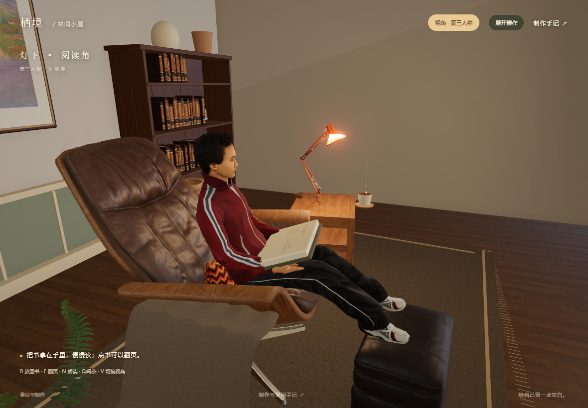

帮助进入一种状态
把开始工作、安静阅读、结束一天，做成容易进入的日常时刻。每个元素都服务于同一个感受。
状态与仪式FIELD NOTES / 01 一个可以待着的地方
一处空间、一点声音、一次回应。
把数字内容，组织成一个可以感受、参与、
并愿意再次回来的小世界。
先看，再听，最后试着与它发生一点关系。
风拂过叶片，水面映着小屋。即使不操作，这里也在继续生活。
当前实践 / 可以亲身参与的小世界
林间小屋已把阅读角、茶角和池塘接成同一个实时 3D 空间。自己控制人物行走、坐下、拿书翻页、放书起身，也可以在户外靠坐喝茶。
第一、第三人称共享人物与动作；自然录音随位置变化，MiniMax 朗读跟着手中的书。首页池塘保留独立观察入口，两处实践的制作方法与素材账本一并收录。
当前为体验原型，已完成有范围的动作、接触与往返检查。长期使用和稳定情绪效果仍需产品化验证。

01 / 我们的理解
“环境构造情绪，然后引发沉浸式体验”是我们的工作命题。
把它展开，会看到一条更具体的设计路径。
这条路径描述设计意图。实际体验会随个人、情境和使用方式变化；陪伴也允许人随时把注意力带回自己的生活。
02 / 对我们的价值
游戏增加目标和规则，陪伴强调低负担的存在。
同样的环境构造方法，还可以接上真实的活动、信息与记忆。
把开始工作、安静阅读、结束一天，做成容易进入的日常时刻。每个元素都服务于同一个感受。
状态与仪式环境可以持续存在，用户偶尔看一眼、听一会儿，也能得到回应。注意力可以自由进入和退出。
陪伴与连接记录、选择和投入逐渐改变一个地方。当变化有真实来源，小世界就有了属于使用者的历史。
积累与意义我们最终要观察：是否更容易开始，是否舒服地停留，是否愿意再次回来。
03 / 可以扩展的方向
从“用户正在过什么样的一刻”出发，
再选择场景、声音与交互。点选一个方向，展开它的制作提案。六个方向是概念探索，当前实时体验为池塘与林间小屋。
安静陪伴
01 / 06选择方向，查看场景如何为具体用途服务。
04 / 构造原理
主场景回答“我在哪里”。辅助元素共同回答“这里是什么感觉”。
交互与时间进一步回答“这个地方和我有什么关系”。
搭配成立的依据：情绪一致、空间可信、强度适当、节奏彼此留有余地。
构造方案示例 / 一次点击，多个同步回应
05 / 从哪里开始
第一版：固定镜头的暮色池塘，一间小屋、一只鸭子、
几层声音和两个交互。完成一次完整体验，再向外生长。
谁在什么时候使用？希望进入什么状态？先确定一个用途和一种主要感受。
产出 / 一张场景卡先定构图与光线，再制作独立模型、材质和动作；让水、植物和动物共同响应环境。
产出 / 可实时渲染的场景制作可循环水声、稀疏自然声、低强度音乐和短音效，分别试听，再混合。
产出 / 分轨声音素材同一份时段、灯光、物件状态驱动画面和声音。点击时一起安排动作与音效。
产出 / 可操作的小场景先用优质现成资产建立空间，再用动作、声景和共同状态组织体验。
回到池塘试一试06 / 本次实践的沉淀
把“环境构造情绪，引发沉浸体验”的理解，与两个实时 3D 场景的制作放在一起。整理水面、鸭子、室内风雨和人物动作链，留下来源账本、复用条件与实际验收边界。
进入小屋，走到池边 ↗连通空间、双视角、同源动作、坐姿接触，以及可复制场景卡和产品化边界。
打开完整手记 ↗参考与边界
起点是 Daniil 展示的 Quack：帖文提到自然声音，以及随时段和季节变化的生成式音乐。视频可见分开的声音控制与音乐盒式可视化。
首页池塘为实时三维场景：水面反射、植被风动、鸭子动作和声音由共同状态驱动。六个方向保留 AI 场景美术与产品提案。美术与音频均未取自 Quack。
自然录音：溪流 / Siddharth Patil（Ksd5），CC0；池塘蛙与蟋蟀 / Glaneur de sons，CC BY 3.0。两段均经过裁切、降采样与交叉淡化，用于连续声景。鸭叫：gibarroule / Freesound，CC0；已裁切并调整音量。风声与短拍水声为程序合成。
鸭子模型：Realistic Mallard Duck — 3Dima，CC BY 4.0；本项目调整格式、比例、水线并增加实时动作。植被、岩石、地表材质与环境光素材来自 Poly Haven，CC0。